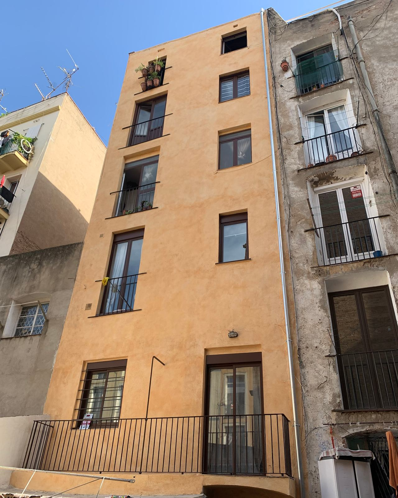
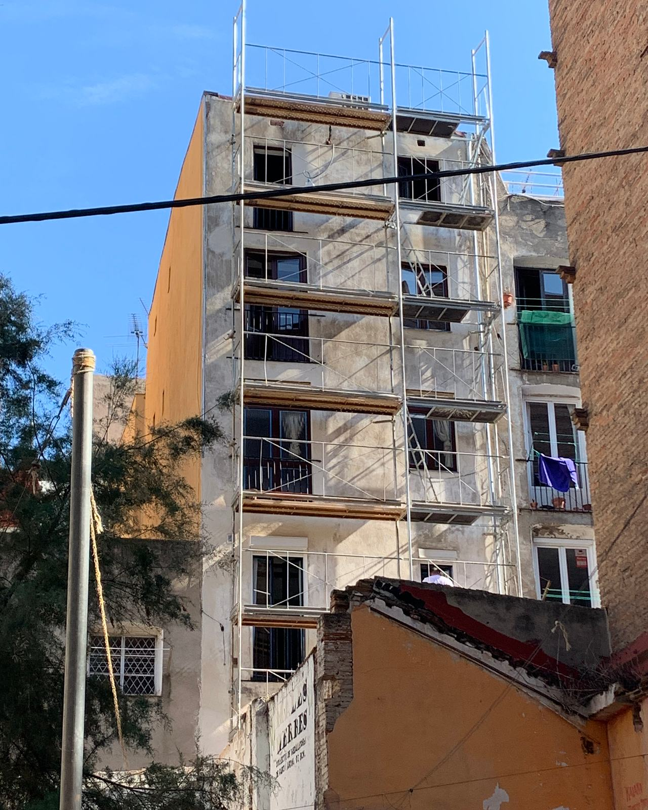
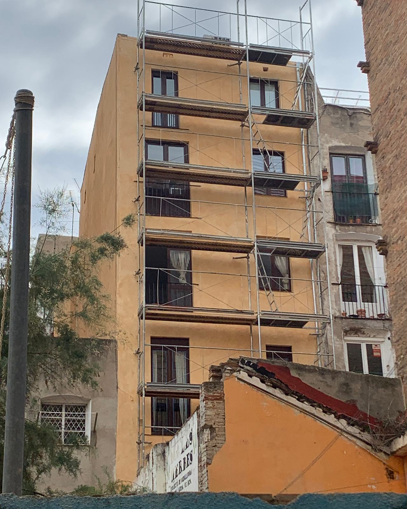

Cuándo pintar la fachada de la comunidad
Una fachada no se pinta solo por estética: la pintura protege el revoco y el muro del agua. Estas son las señales que avisan, los trámites habituales y cómo llevarlo a la junta para que se decida con datos.

- La pintura de una fachada protege el revoco: cuando falla, el agua empieza a entrar en el muro.
- Desconchados, fisuras, manchas de humedad y zonas que suenan a hueco son señales para revisarla.
- Antes de pintar hay que reparar el soporte; si no, la pintura nueva dura poco.
- Casi siempre hace falta comunicar la obra al ayuntamiento y, si el andamio ocupa la acera, pedir permiso de vía pública.
- Las ayudas cambian con cada convocatoria: conviene consultarlas antes de votar.
Las señales que avisan
La pintura de fachada es una piel fina que protege el revoco del agua y del sol. Mientras está entera, el muro trabaja seco. Cuando empieza a fallar, el agua entra por donde puede y el deterioro se acelera. Estas son las señales que vemos con más frecuencia:
- Pintura que se levanta o se desconcha. Placas que se despegan, sobre todo en las zonas que más lluvia reciben o bajo balcones y cornisas.
- Color apagado o desigual. La fachada «caleada», con polvo de pigmento que mancha al pasar la mano, indica que la pintura ha perdido su capacidad de proteger.
- Fisuras. Las finas, de la capa de pintura o del revoco, se tratan al pintar. Las que crecen, se abren en escalera o atraviesan el muro pueden ser estructurales y las debe ver un técnico.
- Manchas de humedad y chorretones. Debajo de vierteaguas, cornisas, bajantes o aparatos de aire acondicionado. Dicen por dónde entra o por dónde resbala el agua.
- Verdín y moho. En las caras que reciben poco sol. Hay que tratarlos antes de pintar o vuelven a salir.
- Revoco hueco. Zonas que suenan a hueco al golpear con los nudillos: el revoco se ha separado del muro y puede acabar cayendo.


Lo que no puede esperar
Hay situaciones en las que no conviene esperar a la próxima junta ordinaria. Si caen trozos de revoco, de cornisa o de balcón a la calle, lo primero es la seguridad: retirar lo que esté suelto y, si hace falta, proteger la acera. Lo mismo si la inspección técnica del edificio (ITE) ha señalado desprendimientos o lesiones graves en la fachada.
En esos casos el orden es: asegurar, diagnosticar con un técnico y presupuestar la reparación. La pintura viene después.
Qué se hace antes de pintar
La parte que más alarga la vida de una fachada es la que no se ve en las fotos finales. Un buen presupuesto la detalla:
Diagnóstico
Recorrer la fachada, golpear el revoco, mirar cornisas, balcones y bajantes, y hacer fotos de cada lesión. Sirve para medir y para que la junta vea qué se paga.
Saneado
Picar el revoco hueco, retirar la pintura suelta y limpiar la superficie, también el verdín y el moho.
Reparación
Rehacer revoco, tratar fisuras, reparar cantos de balcón y vierteaguas, y resolver por dónde entra el agua: si no se corrige la causa, la pintura nueva vuelve a fallar en el mismo sitio.
Fondo y pintura
Una imprimación adecuada al soporte y dos manos de pintura de fachada, en los colores aprobados.
Qué pintura elegir
No hay una pintura buena para todas las fachadas: depende del soporte. En revocos de cal y fachadas antiguas, una pintura al silicato deja respirar el muro y se integra con el mineral. En revocos de cemento en buen estado funcionan bien las pinturas acrílicas de fachada. Si hay fisuras finas que se mueven, un revestimiento elástico las acompaña mejor. Lo importante es que el sistema sea compatible con lo que hay debajo y que el presupuesto diga cuál es.
Permisos habituales
Cada ayuntamiento tiene su procedimiento, pero estos son los trámites que suelen aparecer:
- Comunicación o licencia de obras. Pintar y reparar una fachada suele requerir, como mínimo, comunicar la obra al ayuntamiento. Si se cambia el color o el edificio está en una zona con normativa específica, puede pedirse más documentación.
- Ocupación de la vía pública. Si el andamio, la plataforma o el contenedor ocupan la acera o la calzada, hace falta un permiso propio, con su plazo.
- Edificios protegidos. Si el edificio tiene algún grado de protección, el color y el sistema los marcan la normativa municipal y, en su caso, la dirección facultativa. Nosotros trabajamos con lo que indiquen.
- Medios auxiliares. El andamio debe montarse y revisarse según la normativa de seguridad, y suele necesitar su propia documentación técnica.
Lo práctico es preguntar al ayuntamiento al principio, antes de cerrar fechas, para saber qué piden y cuánto tardan.
Ayudas a la rehabilitación
Las administraciones convocan periódicamente ayudas para rehabilitar edificios de viviendas, a veces ligadas a la mejora energética o a la reparación de lesiones señaladas en la ITE. Las condiciones, los importes y los plazos cambian de una convocatoria a otra, por eso no damos cifras aquí: lo correcto es consultar la convocatoria vigente en el ayuntamiento o en la Agència de l’Habitatge de Catalunya.
Lo que sí se repite casi siempre: piden el presupuesto desglosado, fotos del estado previo y, a menudo, que la obra no haya empezado antes de solicitarla. Un diagnóstico con fotos y un presupuesto por partidas facilitan el trámite.
Cómo preparar la junta
La fachada es una de las obras que más se discuten en una comunidad porque se paga entre todos y se nota mucho. Lo que ayuda a que se vote con datos:
- Fotos del estado actual, con las lesiones señaladas, para que los vecinos vean lo mismo que el técnico.
- Presupuestos comparables: medios auxiliares, reparaciones y pintura por separado, y el sistema y la marca indicados. Así se compara concepto por concepto y no solo el total.
- Opciones claras si se quieren: solo la fachada principal, también los patios, cambio de color.
- Calendario aproximado y cómo afecta a los vecinos: balcones a los que hay que acceder, días de andamio, ropa tendida.
Si eres administrador de fincas, en esta página explicamos cómo trabajamos con quien gestiona varias fincas.
Lo que más nos preguntan
¿Cada cuánto hay que pintar una fachada?
No hay un plazo fijo: depende del soporte, de la orientación, de la pintura que se usó y de cómo se hizo. Lo útil es revisarla periódicamente, por ejemplo con la ITE, y actuar en cuanto aparecen las primeras señales.
¿Se puede pintar solo una parte?
Sí, por ejemplo un patio de luces o la planta baja. Lo difícil es igualar el color con el resto, que ha envejecido: a veces compensa pintar el paño entero hasta una esquina o una moldura.
¿Quién decide el color?
La comunidad, dentro de lo que permita la normativa municipal. En edificios protegidos o en algunas zonas, el ayuntamiento puede fijar la gama.
¿Hay que estar en casa durante la obra?
No hace falta, pero sí dar acceso a los balcones cuando toca trabajarlos. Se avisa con antelación a cada vecino.
Lo ha escrito el equipo técnico de Lamper Soluciones de Acabado a partir de su experiencia en obra. Es una guía general: los trámites y las ayudas dependen de cada ayuntamiento y de cada convocatoria. Revisado en octubre de 2026.
¿Toca pintar la fachada?
Mándanos fotos de lejos y de cerca, la población y el número de plantas. Te decimos qué vemos y preparamos la visita.